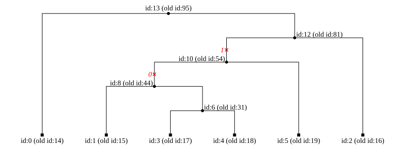
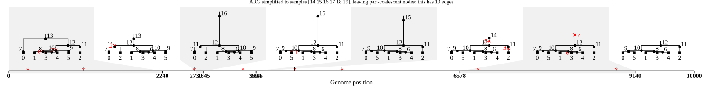

Advanced simplification#
Note
This tutorial is only partly complete, and there are a number of sections containing TODO items.
This is a companion to the basic Simplification tutorial.
It focuses on details of simplify behavior that are useful when you need precise
control over node IDs, retained ancestry structure, and sample flags.
If you are primarily subsetting samples or reducing tree sequence size, start with Simplification.
Note
You can both simplify an immutable TreeSequence (to return a new one),
or run simplify() on a TableCollection (which
modifies in place, and requires Table indexes to be built as well as the
tables to be sorted). Simplifying tables in place
is often useful for forward-time simulations.
1) Tracking node ID changes#
With default settings, simplification compacts tables and therefore reassigns node IDs. If downstream code makes use of stored node IDs, request a map:
focal = arg.samples()[-6:] # pick last 6 samples (3 diploids)
simp, node_map = arg.simplify(focal, map_nodes=True)
print(f"Original ARG: {arg.num_individuals} individuals, simplified to {simp.num_individuals} individuals")
print(f"Original ARG: {arg.num_nodes} nodes, simplified to {simp.num_nodes} nodes")
print("Dropped nodes:", int(np.sum(node_map == tskit.NULL)))
print("Old sample ID", int(focal[0]), "maps to new ID", int(node_map[focal[0]]))
Original ARG: 10 individuals, simplified to 3 individuals
Original ARG: 113 nodes, simplified to 14 nodes
Dropped nodes: 99
Old sample ID 14 maps to new ID 0
Note that when simplifying tables in-place using TableCollection.simplify() a map
is always returned. To avoid compacting the node table, and leave node IDs unchanged, use
filter_nodes=False.
Obtaining the reverse map#
Often you might want a reverse map, mapping the new node IDs to the old ones. Here’s a simple way to do that:
def invert_map(node_mapping):
kept = node_mapping != tskit.NULL
indexes = node_mapping[kept] # indexes are guaranteed 0..N-1
rev_map = np.full_like(indexes, tskit.NULL)
rev_map[indexes] = np.flatnonzero(kept)
return rev_map
reverse_map = invert_map(node_map)
print("New sample ID 0", "maps to old ID", int(reverse_map[0]))
New sample ID 0 maps to old ID 14
Here’s a visualization of how the IDs in the first tree have changed:
simp.first().draw_svg(
size=(800, 300),
time_scale="rank",
node_labels={nd.id: f"id:{nd.id} (old id:{reverse_map[nd.id]})" for nd in simp.nodes()}
)

2) Information above the local roots#
Usually there are no nodes or mutations in a tree sequence above each local root. However, because simplification deletes topology, it can cause a node lower down a tree to become a new local root. This new root can therefore have nodes and mutations above it.
In some cases, you might want to retain nodes above new roots, which is possible by
setting keep_input_roots=True. The most common reason for this is to allow
recapitation of forward-time simulations.
See this tutorial section
for details.
Removing mutations above the root#
You can also end up with mutations above local roots, for instance when all the chosen
samples share a single derived mutation. In long running forward-time
simulations with mutation, many such mutations can gather above each local root.
These can be removed by re-setting the ancestral_state of a site to the derived_state
of the mutation immediately above the root node. There is currently no method
provided to do this, but the following code should work
(see this tskit issue):
def remove_root_mutations(ts):
tables = ts.dump_tables()
tables.sites.clear()
tables.mutations.clear()
for tree in ts.trees():
for s in tree.sites():
anc_state = s.ancestral_state
root_states = {u: anc_state for u in tree.roots if not tree.is_isolated(u)}
for m in s.mutations:
if m.node in root_states:
anc_state = m.derived_state
root_states[m.node] = anc_state
else:
tables.mutations.append(m.replace(parent=tskit.NULL))
if all([anc == anc_state for anc in root_states.values()]):
if anc_state != s.ancestral_state:
print(
f"- changed ancestral state from {s.ancestral_state} to {anc_state} "
f"for site {s.id} at position {s.position}"
)
tables.sites.append(s.replace(ancestral_state=anc_state))
else:
raise ValueError(
f"Multiple roots with different inherited states exist for the site at position {s.position}"
)
tables.compute_mutation_parents()
return tables.tree_sequence()
simp_no_root_muts = remove_root_mutations(simp)
# Check this encodes the same genetic variation
for var1, var2 in zip(simp.variants(), simp_no_root_muts.variants()):
assert (var1.states() == var2.states()).all()
print(
f"Original simplified tree sequence had {simp.num_mutations} mutations, "
f"and now has {simp_no_root_muts.num_mutations} mutations")
- changed ancestral state from A to T for site 5 at position 4861.0
- changed ancestral state from T to C for site 7 at position 8863.0
Original simplified tree sequence had 8 mutations, and now has 6 mutations
3) Keeping ancestral individuals#
In some cases, a tree sequence might contain historical individuals which are associated with nodes that are not samples, and you wish to retain information on individuals which remain ancestral after simplifying. For example a forward-time simulation could define individuals for all nodes in the past, including the pedigree links between parents and children, and you wish to retain the chain of individuals that define that portion of the pedigree which is relevant to the genetic ancestry (see also discussion in the SLiM manual, and in SLiM issue #139).
To keep all the individuals associated with genetic ancestry, you can use
keep_unary_in_individuals=True. In particular this will retain
ancestral nodes which are are associated with an individual but not
coalescent anywhere along the genome, and cause
the referenced individuals to be retained too.
Todo
Should we have a demonstration here? Building a forward simulator could be used to create a simulator that saves pedigree information into each individual, and we could distill some of the discussion from https://github.com/MesserLab/SLiM/issues/139 into an example of storing a coherent pedigree.
The keep_unary_in_individuals argument is a specific example of keeping some, but not all,
non-coalescent ancestry in the tree sequence. If you need to retain a known set of
non-coalescent nodes, it can be helpful to treat them as focal samples and use the
update_sample_flags=False option, as described next.
4) Setting sample flags#
Normally the nodes that are provided to the simplify() function are marked as sample
nodes in the output (by setting the NODE_IS_SAMPLE flag), and other nodes have that flag unset.
If you provide the update_sample_flags=False argument, all node flags are left unchanged.
Here are some cases where that can be useful.
Parallel simplification#
One use for the update_sample_flags=False option combines it with filter_nodes=False,
to ensure that the node table remains untouched during simplification.
This is primarily a use-case targeted at developers of forward simulators, and allows
logically disjunct parts of the edge table to be simplified in parallel, without
risking two parallel processes trying to alter the same data.
Todo
Should we provide an example? However, this tends to be done at a lower level, e.g. using the C API, and is likely to be only useful for developers.
Retaining non-coalescent nodes#
The keep_unary=True option retains all ancestral nodes after simplification, even
if they don’t represent coalescences. Sometimes you might want to retain some but not
all such nodes, which can be done by adding them to the focal node list but using
update_sample_flags=False to ensure they are not marked as samples in the final output.
This is usually followed by an additional simplification pass to remove any topology
above the additional nodes which is not ancestral to the true samples. Here are some examples:
Todo
Currently the code below wrongly includes a few extra RE and CA nodes, because nodes
above local roots are retained when keep_unary=True, see
https://github.com/tskit-dev/tskit/issues/3450.
Keeping non-coalescent regions of coalescent nodes#
By default, simplify() deletes not just non-coalescent nodes, but also
removes from the ancestry those regions of coalescent nodes which do not represent
a coalescence in the local tree (i.e. are “locally unary”). Until tskit has this
functionality built-in, we can
implement similar functionality by identifying coalescent nodes using an initial
round of simplification, then keeping those specific nodes through simplification:
simp, node_map = arg.simplify(focal, map_nodes=True)
keep_nodes = np.where(node_map != tskit.NULL)[0] #includes sample and coalescent nodes
# Retain lots of nodes by treating them as focal, but don't change sample flags
tmp_ts = arg.simplify(keep_nodes, update_sample_flags=False)
# Now re-simplify, in case any coalescent nodes have unwanted ancestry above
part_simp_ts = tmp_ts.simplify(keep_unary=True)
Often, leaving in the non-coalescent regions of coalescent nodes can lead to a reduction
in the number of edges. This is one reason that the TreeSequence.extend_haplotypes()
exists (see the documentation of that method for more detail).
print(f"Full simplification to samples {focal} leads to {simp.num_edges} edges")
print(
f"Similar simplification leaving partially-coalescent nodes leads to {part_simp_ts.num_edges} edges"
)
part_simp_ts.draw_svg(title=(
f"ARG simplified to samples {focal}, leaving part-coalescent nodes: "
f"this has {part_simp_ts.num_edges} edges"
))
Full simplification to samples [14 15 16 17 18 19] leads to 20 edges
Similar simplification leaving partially-coalescent nodes leads to 19 edges

Subsetting a full ARG#
The ARGs as tree sequences tutorial discusses the idea of a “full ARG”, containing recombination and
non-coalescent common ancestor nodes, which do not correspond to coalescent events anywhere in
the genealogy. We can use simplify() to reduce a full ARG to a subset of samples, while retaining those non-coalescent nodes. Again, we need to figure out
which nodes to keep, then add them to the focal nodes, simplifying with update_sample_flags=False.
We can detect the common ancestor nodes by finding those which still have 2 unique children after
simplifying with keep_unary=True and the recombination nodes
by finding which still come in pairs after such simplification.
def arg_num_children(ts): # see the ARG tutorial which explains this code
same_parent = np.concatenate((ts.edges_parent[1:] == ts.edges_parent[:-1], [False]))
same_child = np.concatenate((ts.edges_child[1:] == ts.edges_child[:-1], [False]))
is_last_unique = ~same_parent | ~same_child # last occurrence of each unique child per parent
return np.bincount(ts.edges_parent[is_last_unique], minlength=ts.num_nodes)
re_node_pairs = np.where(arg.nodes_flags & msprime.NODE_IS_RE_EVENT)[0].reshape(-1, 2)
print("RE nodes before simplification\n", re_node_pairs)
RE nodes before simplification
[[ 21 22]
[ 24 25]
[ 29 30]
[ 34 35]
[ 39 40]
[ 42 43]
[ 45 46]
[ 52 53]
[ 55 56]
[ 59 60]
[ 61 62]
[ 63 64]
[ 68 69]
[ 72 73]
[ 74 75]
[ 79 80]
[ 84 85]
[ 86 87]
[ 90 91]
[ 92 93]
[ 96 97]
[ 99 100]
[102 103]
[105 106]
[109 110]]
Identifying the msprime recombination nodes that stay as pairs after simplification requires a little work:
simp, node_map = arg.simplify(focal, keep_unary=True, map_nodes=True)
reverse_map = invert_map(node_map)
simp_re_nodes = reverse_map[np.where(simp.nodes_flags & msprime.NODE_IS_RE_EVENT)[0]]
valid_pairs = np.isin(re_node_pairs, simp_re_nodes).all(axis=1)
keep_re_nodes = re_node_pairs[valid_pairs, :]
print("paired RE nodes after simplification\n", keep_re_nodes)
keep_RE_nodes = keep_re_nodes.flatten()
keep_CA_nodes = reverse_map[arg_num_children(simp) > 1]
paired RE nodes after simplification
[[29 30]
[45 46]
[61 62]
[63 64]
[68 69]
[84 85]
[90 91]
[96 97]]
Now that we have defined which nodes to keep, we can use the same trick as before,
passing these nodes as focal, but simplifying twice, once with update_sample_flags=False,
then again with keep_unary=True:
keep = np.concatenate((focal, keep_CA_nodes, keep_RE_nodes))
tmp_arg = arg.simplify(keep, update_sample_flags=False)
subset_arg = tmp_arg.simplify(keep_unary=True) # Defaults to focal nodes = existing samples
Here’s what it looks like in graph form, with recombination nodes in red and common ancestor non-coalescent nodes in blue:
d3arg = argviz.D3ARG.from_ts(ts=subset_arg)
d3arg.set_all_node_styles(size=100, stroke_width=2)
d3arg.set_node_styles({
u: {"symbol": "d3.symbolSquare", "fill": "black"} for u in subset_arg.samples()
})
d3arg.set_node_styles({i : {"fill": "red"} for i in node_map[keep_RE_nodes]})
d3arg.set_node_styles({i : {"fill": "blue"} for i in node_map[keep_CA_nodes]})
d3arg.draw(
edge_type="ortho",
height=800,
title=f"A full ARG, subset to {subset_arg.num_samples} samples");
5) reduce_to_site_topology#
Todo
Explain why you might use reduce_to_site_topology, e.g. if there is a lot of information
that is not inferable from sites. Note that this does not change the topology at each site,
although some of the topology at a site might not actually be needed to represent the site
variation (to see how to condense topology into “polytomies”, see
https://github.com/tskit-dev/tskit/discussions/2926).